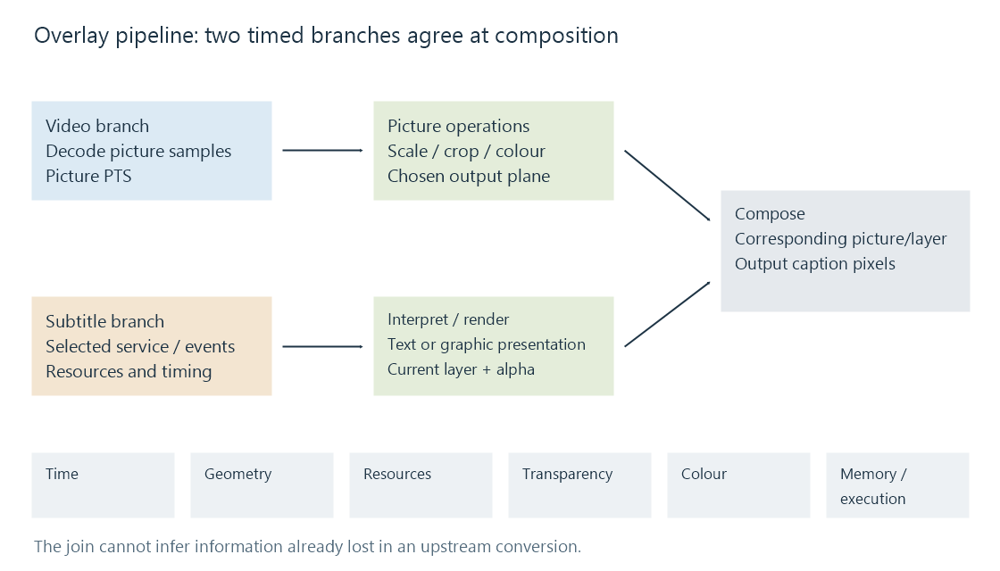
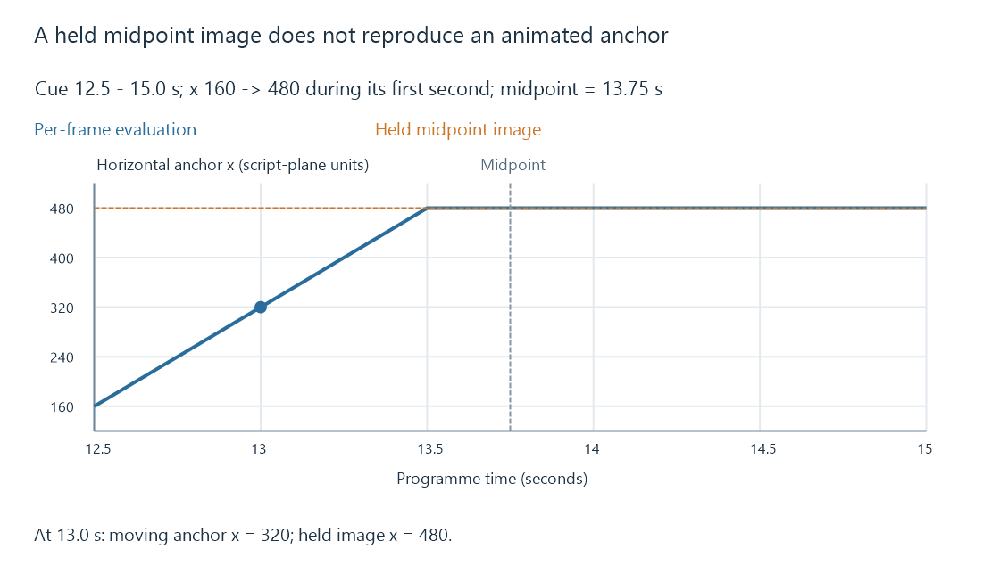

Subtitle overlay pipeline fundamentals
A subtitle overlay pipeline joins two timed branches: decoded video and interpreted captions. Correct output depends on representation, geometry, alpha, colour, resources and memory boundaries.
An overlay pipeline produces picture frames that already contain the subtitle presentation. It joins a video branch with a subtitle branch before the output is encoded. The branches have different jobs and often advance at different rates: pictures arrive regularly, while subtitle events can be sparse and stateful.
The important question is what crosses each boundary. A sentence with timestamps, a decoded graphical object, a transparent video canvas and a GPU image are different kinds of input, even when they ultimately show the same words.

Recover, interpret, render, compose
The video branch reconstructs picture samples from the selected stream. Scaling, cropping or colour conversion may then change the surface on which the captions will appear.
The subtitle branch recovers the selected track or caption service. A decoder can produce text events and associated style/configuration, or graphical objects with position, palette and transparency. A broadcast caption decoder may first have to interpret commands that modify a display state.
Rendering turns that presentation into image samples. For styled text it can include character decoding, shaping, font selection, line layout, outlines, movement and timed highlighting. A graphical subtitle already has much of its appearance, but may still need palette expansion, placement and scaling.
Composition combines those samples with the corresponding video picture. It uses the layer's transparency and geometry; it does not recover missing characters or infer the intended meaning of the dialogue.
The combined pictures are then encoded for delivery. This is why burn-in changes video output, even when every audio packet is retained.
Six agreements at the join
| Contract | What must agree | A recognizable failure |
|---|---|---|
| Time | Picture PTS, cue intervals and any internal effect times share a usable mapping | Right caption on the wrong scene |
| Geometry | Script/object plane, output dimensions, crop origin and placement | Caption shifted, stretched or clipped |
| Appearance/resources | Styles, fonts, glyphs, palettes and language/script requirements | Wrong face, missing glyph or reduced layout |
| Transparency | Alpha location and straight/premultiplied interpretation | Opaque rectangle or dark text edges |
| Colour | Sample format, range and applicable colour processing | Wrong white level or colour tint |
| Memory/execution | CPU/device representation, accepted formats and completion order | Unsupported input or a stalled/failed processing stage |
These contracts interact. A subtitle layer can have correct text and timing but wrong colour because it was composed on the wrong side of a conversion. Matching visible dimensions can conceal a different crop origin or aspect interpretation.
An event interval is not its whole time model
An ASS sign might be active from 12.5 to 15.0 seconds and move horizontally from x = 160 to x = 480 during its first second. At programme time 13.0, the movement has advanced half a second, so the anchor is x = 320. At 13.5 it reaches x = 480.
A renderer evaluated for each picture can show those intermediate positions. A converter that evaluates only one instant and holds that image for the entire event cannot.
The examined Emby source provides both kinds of boundary. textsub2video in vf_overlaytextsubs.c renders the text at the generated video frame's time. The native text2graphicsub converter in sf_text2graphicsub.c calls libass at the event midpoint. For this 2.5-second event, that instant is 13.75 seconds, after the one-second movement has finished.

The static conversion can represent a stationary caption effectively. For this animated sign, preserving start, end and final position still does not preserve the moving presentation. This is a property of the dated 5.1-emby_2023_06_25_u1 implementation, not a claim that every current Emby text conversion behaves this way.
Picture operations also affect captions
If composition precedes a downscale, the subtitle pixels are resampled with the picture. Fine outlines and character edges can change. If text is rendered after scaling, it can be rasterized for the target dimensions, but its script plane and placement still need a correct mapping.
Cropping is similar. Composing an object in a region that will subsequently be removed loses those pixels. Rendering after the crop allows placement in the retained output, provided the graph accounts for the new origin and geometry.
Tone mapping adds a colour-order issue. A layer composed into an HDR picture can pass through the later HDR-to-SDR mapping with that picture. A layer added to the mapped SDR picture needs values suitable for the SDR output. The two orders do not automatically produce the same caption white or coloured lettering.
There is no universal instruction to put every subtitle operation last. The graph must preserve the intended placement and colour while satisfying the available filter interfaces. Rendering geometry and tone mapping explain the corresponding picture properties.
Read a pipeline by its boundaries
Consider a caption with readable letters but a solid box covering the scene. Character decoding and font rendering have probably succeeded enough to produce those letters. The next useful observations concern the layer's alpha, pixel format and compositor interpretation. Retiming the cue does not address that presentation.
For a moving sign frozen at its final location, compare how the text became an image: per-frame evaluation and a held snapshot have different semantics. For a correctly shaped caption that shifts after a crop, inspect the geometry mapping rather than replacing the text file.
These observations connect a visible result to the stage that produced it. In Emby, SDK pipeline step types and subtitle pipeline information can describe stages. The names are semantic categories; the actual session details, tool version and resulting pictures establish which graph ran.
See Also
- Subtitle burn-in
- Subtitle overlay filtering
- Classic subtitle overlay pipeline
- Subtitle filtering pipeline
- Hardware subtitle overlay pipeline
- Subtitle timestamps